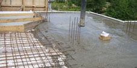

Перекрытия дома.
Перекрытия дома - это конструкция, которая разделяет смежные помещения по высоте, то есть образует этажи и отделяет их от подвальных и чердачных и подвальных. Перекрытие должно быть жестким, чтобы не давать прогибов под действием нагрузок.
Перекрытия делятся на:
Балочные перекрытия разделяются, в зависимости из какого материала выполнены балки, на:
Деревянные перекрытия
Деревянное перекрытие при строительстве дома выполняется из деревянных балок хвойных и лиственных пород деревьев. На верхней стороне каждой балки выполнен настил, который, одновременно, является и полом в доме. Конструкция балочного перекрытия состоит из балок, наката, утеплителя и пола.
Перекрытия по металлическим балкам
По сравнению с деревянными перекрытиями, металлические надежнее и более долговечны, а также имеют меньшую толщину. Перекрытия по металлическим балкам имеют пониженные тепло- и звукоизоляционные качества.
Перекрытия из железобетонных балок
Преимуществом таких перекрытий является то, что с помощью железобетонных балок можно перекрывать большие пролеты.
Безбалочные перекрытия
Представляют собой плотно уложенные, по отношению друг к другу, однородные элементы (плиты или панели) либо монолитную плиту, которые выполняют и несущую, и ограждающую функцию одновременно. В зависимости от технологии выполнения безбалочные перекрытия подразделяются на сборные, монолитные или сборно-монолитные.

Сборные железобетонные перекрытия
Используется наиболее часто, особенно при строительстве кирпичных домов. Для установки железобетонных перекрытий применяют две разновидности панелей: сплошные и многопустотные. Панели подбирают в зависимости от ширины перекрываемого пролета и несущей способности.Преимущества: железобетонные плиты имеют высокую прочность, устойчивы к сырости и не требуют ухода.

Монолитные железобетонные перекрытия
Монолитные железобетонные перекрытия представляют собой сплошную монолитную плиту из бетона марки 200, толщиной от 8 до 12 см, опирающуюся на несущие стены. Вес квадратного метра монолитного перекрытия толщиной 200 мм составляет 480-500 кг. Достоинства монолита: высокое качество бетонной поверхности, которое не требует дополнительной заделки швов, отсутствие дорогостоящих погрузочных и разгрузочных работ, возможность реализации сложных архитектурно-планировочных решений.
Сборно-монолитное перекрытие
Пространство между балками перекрытия заполняется пустотелыми блоками, после чего вся конструкция заливается сверху слоем бетона. Достоинства: высокая степень теплоизоляции, монтаж не требует использования подъемных механизмов, возможность устройства перекрытия сложной формы.